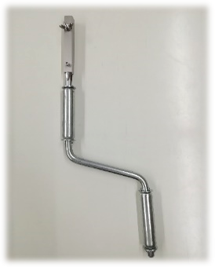

TEL. 06-6627-2516
〒545-0021 大阪市阿倍野区阪南町3-8-26
| ① | 機外静圧を低く抑える事で、騒音値の低い機器が選定出来る。 |
| ② | チャンバー内に消音用の内貼り（GW-25ｔ）を施す事で、減音効果が果せる。 |
| ③ | 手動昇降方式を採用する事で、電気設備が不要。 |
| ④ | ハンドル操作によりフィルターを昇降させ、フィルター交換が作業が、安全且つ簡単になる。 |
| ⑤ | 下部スペースが確保され、有効に活用出来ると共に、荷捌き上の高さ障害も軽減出来る。 |
|
高所に設置した給気フィルターが手元まで降りてくる！ 手軽にフィルター交換（清掃）が行える、昇降式フィルターチャンバー |
|
|
（4,500～6,300 ㎥/h 対応） |
|
|
通路の確保を優先し、ダクト採用ができない場合でも、 高所で作業することなく、安全にフィルター交換（清掃）ができます。 手巻きハンドルもしくは電動ドリルドライバーで操作するため、電気設備が不要です。 |
|
|
【利点】 ・機器静圧を低く抑えることで、騒音値の低い機器選定が可能 ・フィルター交換（清掃）作業が安全かつ簡単 ・ハンドル操作により、手動で昇降させることで電気設備が不要 ・下部スペースが確保され、有効に活用 |
|
| 付属アタッチメント | |
|  | |
|
手動用 |
電動ドリルドライバー用 |
|
|
|
|
|
|
〒545-0021
大阪市阿倍野区阪南町3-8-26
TEL 06-6627-2516
FAX 06-6627-2518